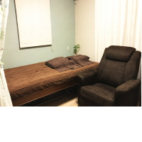

院内設備facilities
施設のご案内
 落ち着いた雰囲気の癒しの空間に、寝心地の良いゆったりと
したベッドとリクライニングできるソファが置いてあります
心地よいBGMと優しい施術であなたの自然治癒力を効果的
に引き出し、心と身体の健康づくりのお手伝いをいたします
ゆったりとおくつろぎいただきながら、心身ともにエネル
ギーをチャージしてください。
バイオレゾナンス実践機「レヨコンプ」（振動測定器）について

最新版レヨコンプPS1000ポラー4.0 （自動測定機能装備）を導入！
身体に変調をきたす生命エネルギー「気」の滞り（エネルギー的障害）を自動測定「STI」
でチェックし、その結果をもとに、自動的に調整プログラムを作成します。これによって非常に素速いアプローチで、おひとりおひとりの状態にあったオーダーメイドプログラムを探すことが可能になりました。
私たちの身体には、361個の経穴（ツボ）があり、これらの経穴は川のように流れる14本の経絡につながっています。東洋医学では、この経絡に沿って「気」と呼ばれる生命エネルギーが流れており、気の流れが滞ったり、遮断されるとその部位または関係する臓器に病気が発生するとしています。
これまでの現代医学とは異なる、新しい振動医学のバイオレゾナンス療法はすべての物質は振動を持つことにヒントを得て、ドイツのパウル・シュミット氏が1970年代に完成させた健康法で、現代医学の医師や多くの治療家によって実証されています。
現在世界43ヶ国に普及しており、ドイツ国内では6,000ヶ所の病院・診療所で医師を中心に行われています。ヨーロッパ、マレーシア、オーストラリア、南アフリカ、イランで医療機器の認可を受けています。日本では10数年前に上陸し、医師や歯科医、鍼灸師、獣医などの治療家に普及し、実践されています。
すべてのものは、固有の周波数を持つことに着目したシュミットは、動物、植物をはじめ有機・無機の物質が有する振動を0〜100までの周波数として数値化しました。そして、あらゆる「気の滞り」の固有周波数を突き止め、それと同じ周波数の振動によって、滞りを見つけたり解消する方法を開発しました。ドイツ振動医学は、目に見えない生体エネルギーを振動というカタチに数値化「見える化」して、振動測定器で簡単に使えるようにしたのです。
レゾナンス（共鳴）の概念は技術分野においては良く知られています。建物や橋をはじめ、あらゆる物体そして人の身体も固有の振動を持っています。それに対して別の所から同じ周波数の振動が来ると、この2つの波は共鳴します。たとえば音叉はある特定の周波数に同調されています。音叉自体はエネルギーを持っていないので通常は振動しません。しかし、近くにもうひとつ同じ周波数の音叉があった場合、これを叩くとはじめの音叉も同様に振動を始めます。つまり、レゾナンス（共鳴）が生じたのです。
同じ音叉は共鳴する 異なる音叉は共鳴しない
（パウルシュミット式バイオレゾナンスより抜粋）
この「レヨコンプ」（振動測定器）をセットすると、希望する周波数の振動が発生します。身体につけたディテクタを使って、共鳴がおきるかどうかを見ます。このバイオレゾナンス療法（生体共鳴法）は、振動の共鳴によって、気の流れを塞ぎ止めているエネルギー的障害の周波数を突き止め、さらに共鳴通じて振動調整（気の流れの滞りやエネルギー的障害を取って、気のバランスを図ること）し、本来の自然治癒力や生命力を引き出していくものです。
こすもす鍼灸治療院
〒889-1609
宮崎市清武町あさひ1-59
TEL 0985-77-8955